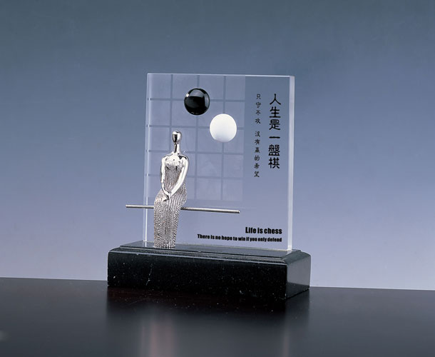

人生如棋落棋不悔
#1 人生如棋落棋不悔 作者：逆刃 发表时间：2008-3-14 10:39:26
本文链接：http://user.qzone.qq.com/568991662/blog/1205407908

是他教她下的五子棋。
那一年,她刚在公司崭露头角,正是大展宏图的时候,没想到却在一次交通事故中摔伤了腿,需要静养3个月。她家在外地,没有人照顾,又担心休假时间太长会被老板炒鱿鱼,忧虑重重,几天几天时间便瘦了一圈。
实在没办法,她只能给他打电话。他是她大学同学,毕业后又留在同一个城市工作,而且平时经常一起喝酒聊天。接到电话,他几乎是一路狂奔来到她家。看着她打了石膏的腿,他立刻从原来的房子搬了出来,租了她隔壁的房间,承担起全部家事,细心地照顾她。因不放心她一个人在家,他反复叮嘱她:“有事就敲墙壁,我马上过来。”他们还约好了暗号,敲一下就是喝水,两下是拿东西,三下是无聊了想下棋,而他则随叫随到。
她被双脚所困,心情郁闷。他买来零食影碟时尚杂志及围棋,两个人在阳台上,黑白两色棋子,进攻防守,四海纵横,渐渐地她迷上了这种游戏。
有了五子棋和他的陪伴,他的心情明朗了起来,恢复了任性刁蛮的脾性,下棋赢了,她欢呼雀跃;输了,他便耍赖,无数次地悔棋......这时候,他含笑看着她,虽然嘴里说着:“丫头,落棋无悔,哪有你这样下棋的?”却任她将棋子移回原来位置,重新再来。
他喜欢她,从高中时就开始了。那时他是个羞涩的男生,做了3年同桌,和她考取了同样的大学,毕业后又追随她留在同一座城市,但却始终没能把心事说出口,只是默默地陪在她身边,在她需要帮助的时候第一时间赶到。
有他悉心照料,她恢复的很快。看着一个大男人弯腰在厨房里为自己洗菜熬粥,难免心动。但她的心是飞在天上的鸟,外面世界那么精彩,她怎肯被一个笼子束缚?
3个月时间悠然而过,她已完全恢复正常,重新穿上高跟鞋穿梭在写字楼。他仍然在她隔壁,晚上煲了养颜粥给她端过来,边喝粥边下棋。一不小心被他赢了去,她便叫着撒娇悔棋,他也微笑着任她摆弄棋局。直到她带了男朋友回来,典型的钻石王老五,有自己的公司。他们在电梯上巧遇,她大大咧咧地拍着他的肩膀,向男朋友介绍:“我的大学同学,好哥们。以后你胆敢欺负我,他肯定为我报仇......”
他先是楞住了,然后尴尬地笑了。一个星期后他跟她告别,说要回老家,以后可能不回来了。她怔了怔,挽留他的话最终还是没有说出来。
在他离开之后,晚上下班回来,没有人熬好糯米莲子粥等她了，没有人听她说那些疯疯癫癫不着边际的话。她那个青年才俊男友因为性格不合,没多久就分手了。
一天晚上,她忽然想下棋,习惯性的敲了敲墙壁,却换来一片沉寂,这时的她才恍然,那个陪她下棋的人,已经不在了。她呆呆地想了想,然后跑到书房里打开电脑,进入五子棋游戏,屏幕上一样是方格棋盘,黑白两色棋子。
第一局,她输了。第二局,她还是输了。第三局,一不留神,对方已摆好4个子。她急忙点屏幕上的“悔棋”,对方回复:落棋无悔。她不甘心,又点“悔棋”,对方仍然冷冰冰回复:落棋无悔。
她的鼠标停在屏幕上,泪水悄悄弥漫了双眼。她终于明白,原来只有怀了深深的爱,才会包容和原谅她的过失,一次次任由她悔棋。她急急翻出她的电话,要告诉他:是她没留心看错了,她要悔棋一切重来。电话打过去,却始终是“对不起,您拨打的号码已停用......”不甘心,找出他走时留给她的新公司电话,一个睡意惺忪的声音不耐烦地回应:“你找他啊,出车祸死了半年了,你不知道?”
手中话筒“啪”地落在地上,她终于明白,那个让她悔了无数次棋的人从此再也不会给她悔棋的机会了......